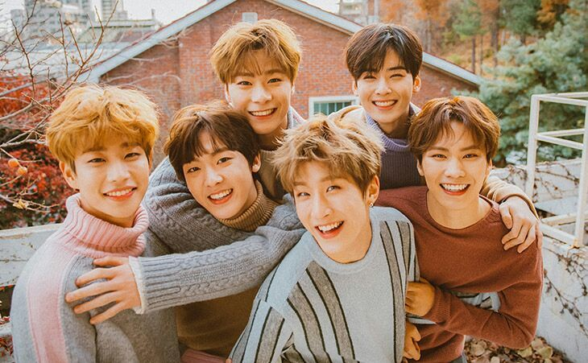

O Maroon 5 é uma famosa banda de rock norte-americana cujos integrantes são Adam Levine (vocal, guitarra) James Valentine (guitarra) Jesse Carmichael (teclados) Mickey Madden (baixo) e Matt Flynn (bateria). A história da banda começou ainda quando seus integrantes estavam no colegial em uma escola de Los Angeles.
The Chainsmokers era inicialmente composto por Alex Pall e pelo Rhett Bixler, a dupla de DJs de electronic dance music (EDM) fora formada em 2008, na cidade de Nova Iorque. Eles se apresentavam em casas noturnas da cidade e tinham sua própria festa nomeada "A Coterie". Por volta de 2012, a parceria entre ambos terminou e somente Pall decidiu continuar o projeto. Adam Alpert, passou a agenciar a dupla, agora com um novo membro definitivo, Andrew Taggart.
BTS, também conhecido como Bangtan Boys (hangul: 방탄소년단; hanja: 防彈少年團; rr: Bangtan Sonyeondan), (em inglês um acrônimo de Beyond The Scene) é um grupo sul-coreano estreado pela Big Hit Entertainment em 2013. Esse grupo tipicamente k-pop, é composto por sete membros: Jin, Suga, J-Hope, RM, Jimin, V e Jungkook.
O grupo é composto por meninos de 16 a 22 anos. Eles fizeram sua estreia no entretenimento coreano com web drama To Be Continued, que foi ao ar dia 18 de agosto de 2015 e está disponível com todos os 12 capítulos no Drama Fever.